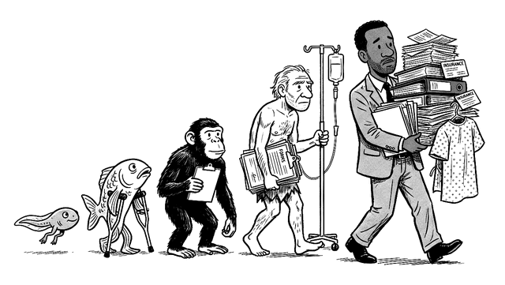

What’s in the book
Thirty-six chapters in seven parts, then ten appendices.
Thirty-six chapters in seven parts, then ten appendices.
Your Part to Play
- 1The Biggest Purchase You Never PricedWhat you’re really spending on health care, the helpers you’ve already paid for, and what to ask before you agree to any treatment.
- 2Simple Things That Will Extend Your LifeTen small chores you can finish in minutes that earn their keep the day something goes wrong, plus inexpensive habits and checks already known to add years.
- 3The Bill After, and the DebtReading a hospital bill, getting it reduced or wiped out, and handling collectors, lawsuits and medical debt.
- 4The Manners, and When to Break ThemStaying kind to the person in front of you while pressing the institution behind them, and asking in a way that gets results.
The Doctor and the Visit
- 5Which Door: From Telehealth to the ERChoosing among 911, the ER, urgent care and telehealth, what each costs, and what to say once you’re in the ER waiting room.
- 6A Doctor of Your OwnFinding a doctor of your own, getting an earlier appointment, looking up their record, and moving on if it doesn’t work out.
- 7The VisitPreparing for an appointment, spending its few minutes on what matters most, and keeping track of what you were told.
- 8Your Records Are YoursGetting your full chart in thirty days for the cost of copying, fixing its errors, and taking your history with you to a new doctor.
- 9Dr. Google, Dr. ChatbotGetting more out of search engines and chatbots: what background to supply, what to ask, and how to protect your privacy.
- 10Bringing BackupWho should come with you, recording an appointment, the forms to sign before you need them, and whose side a paid helper is on.
Decisions
- 11What Else Could This Be?Three questions that stop a diagnosis from closing too soon, following up on test results, and when to seek a second opinion.
- 12Risk in Plain NumbersRestating any risk as people out of a hundred, comparing it with everyday risks, and catching numbers that are less exact than they look.
- 13How Long Have I Got?Asking about a prognosis as a range of outcomes, why your odds can improve over time, and why doctors tend to overestimate time left.
- 14The Test You May Not NeedJudging a screening test by its benefits and harms, what a “probably benign” result means numerically, and handling something a scan turned up by chance.
- 15Before You Say YesLaying out all your choices, including no treatment, the questions to ask before you consent, and what to expect from a clinical trial.
- 16What the Other Side Is Paid ForLooking up industry payments to your doctor and what your doctor owns, and how much weight to give what you find.
Surgery and the Hospital
- 17Before the OperationPicking a surgeon and hospital, and what to sort out ahead of time: your medicines, who does the operating, the device rep, pain control and blood clots.
- 18The First Day in HospitalThe forms you’re handed at admission, the difference between admitted and under observation, and who’s actually running your care.
- 19Staying Safe in the HospitalProtecting yourself during a stay: verifying each drug, knowing your team, getting help fast, and keeping your strength up.
- 20Getting Out, and Getting Better at HomeGoing home with your prescriptions, a care plan and someone to call, and appealing a Medicare discharge you think is too soon.
- 21When Something Goes WrongThe first week after a medical error or bad outcome: securing the chart, keeping notes, asking for a meeting and minding the deadlines.
Living With It
- 22Your Medicines, SafelyKeeping a single list, bringing in all your bottles, the riskiest drugs, checks before taking anything over the counter, and what to do about fevers.
- 23A Serious Diagnosis, and the Long HaulThe fourteen days after bad news, then the long haul with a chronic condition: second reads, biomarkers, tumor boards, one keeper of the list, and kidney tests.
- 24Who Gets BelievedWhy some patients are taken seriously and others aren’t, what men give up by avoiding care, and four moves that work for anyone.
- 25Pain, Addiction and the MindHow you look from the prescriber’s side, what the opioid guideline asks of a prescriber and what it leaves open, and finding mental-health care in a thin network: parity law, 988 and picking a therapist.
- 26Pregnancy, Birth and Your KidsWhere to deliver, help during labor, getting the baby on your plan, your own recovery over the year after, then less painful shots for a child, home medicines, anesthesia, school, and the paperwork at eighteen.
- 27Your Parents, and the EndLooking after a parent and preparing for death: documents to sign while you still can, hospital stays, the gaps in Medicare, what CPR really does, hospice, and funeral pricing.
The Money
- 28No: Who Decides, and How to AppealWho makes coverage decisions, the six steps of an appeal, and why most appeals get at least part of what they ask for.
- 29The Price BeforeFinding out the cost ahead of time: billing codes, cash prices, facility fees and getting an estimate in writing.
- 30Drugs for LessCutting your prescription costs with cash prices, older drugs and coupons, and what your pharmacist can do for you.
- 31Things You’ve Already Paid ForNo-cost preventive care, the add-on benefits your employer pays for, and making use of the months after you reach your out-of-pocket maximum.
- 32Getting SeenYour options when a provider directory is out of date, the wait runs long, a surprise bill shows up, or your doctor goes out of network.
- 33Your Plan: Which Rulebook, and Choosing Next Year’sThe nine sets of rules your coverage might fall under, and a simple subtraction for picking next year’s plan.
- 34Between Plans, On Your Own, and at Sixty-FiveChanging coverage: COBRA, marketplace plans, Medicaid’s retroactive coverage, and Medicare choices you can’t easily reverse.
Why It’s This Way
- 35Where the Money GoesFollowing the dollars: who’s profiting, and what one patient can do about it.
- 36How Everyone Else Does It, and What to Ask ForWhat other wealthy countries gain and give up by trading bills for waits, and how patients can change the rules here.
Ten appendices cover your rights in full, twelve letters, advance directives and pre-procedure checks, chatbot prompts, a glossary, where to turn for help, the papers you’ll be handed, step-by-step instructions, questions for an employer’s plan, and how the book was made.
